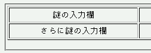
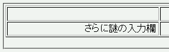

text-alignプロパティで配置を指定したテーブルセル内にあるlabel要素内の文字列が消えてしまう。右側にずれて表示されることもある。
<form action="#"> <table border="1" width="100%"> <tr style="text-align:center;"> <td><label for="in1">謎の入力欄</label></td><td><input type="text" id="in1"></td> </tr> <tr style="text-align:center;"> <td><label for="in2">さらに謎の入力欄</label></td><td><input type="text" id="in2"></td> </tr> </table> <form>
表中のセルはすべて内部文字列をセンタリングしています。
Moz1.0での表示（標準モード）
N6.1での表示（標準モード）
表示されない現象とずれて表示される現象は、文字列の長さやウィンドウの幅によってどちらかが発生します。文字列が長く、ウィンドウ幅が狭い場合にずれて表示される確率が高くなるようです。
th要素はデフォルトで text-align:center; と指定されているため、制作者やユーザがtext-alignプロパティを指定しない状態でも不具合が発生します。
N6.1では表示されない、またはずれて表示されます。N6.2やMoz1.0では正しく表示されます。